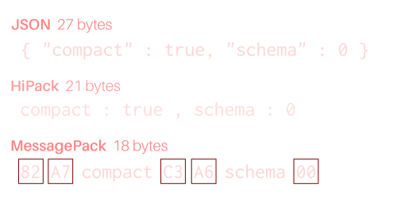

Serialization,
for humans.
HiPack is a human-friendly serialization format. Unlike MessagePack, it is not binary, but text-based. Like JSON, it can be understood by machines and humans — with emphasis on the later.

HiPack is a human-friendly serialization format. Unlike MessagePack, it is not binary, but text-based. Like JSON, it can be understood by machines and humans — with emphasis on the later.
Use the left box to input text in JSON, and check how it would look converted into HiPack, optionally in “compact” form.
HiPack specification:
Enhancement proposals in consideration for the next version of the specification:
HiPack can be used with the following programming languages:
hipack-js module name.
Maintained by the HiPack team.